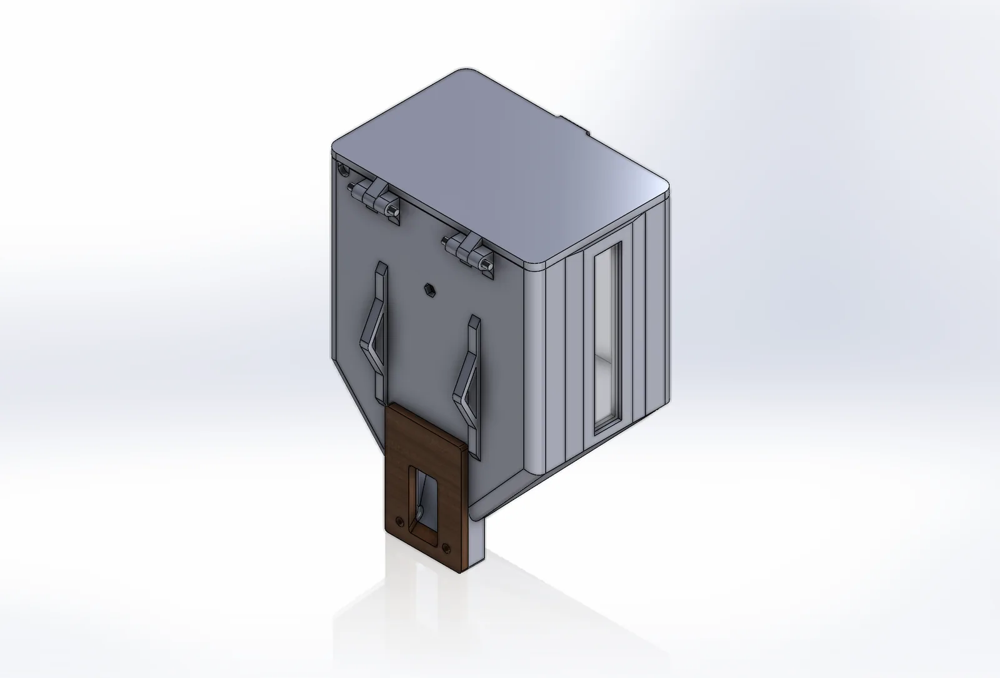
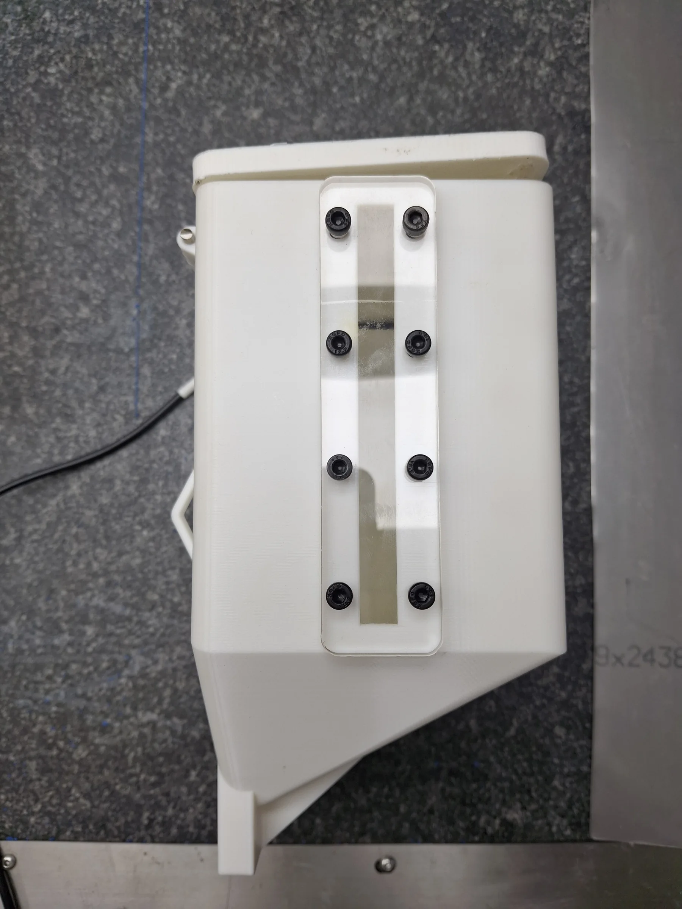
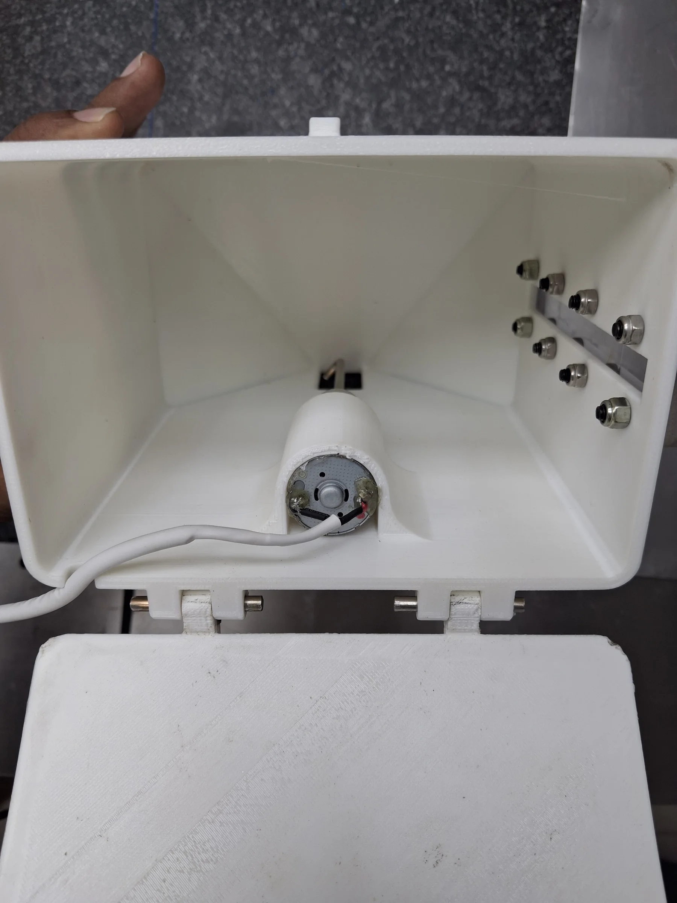
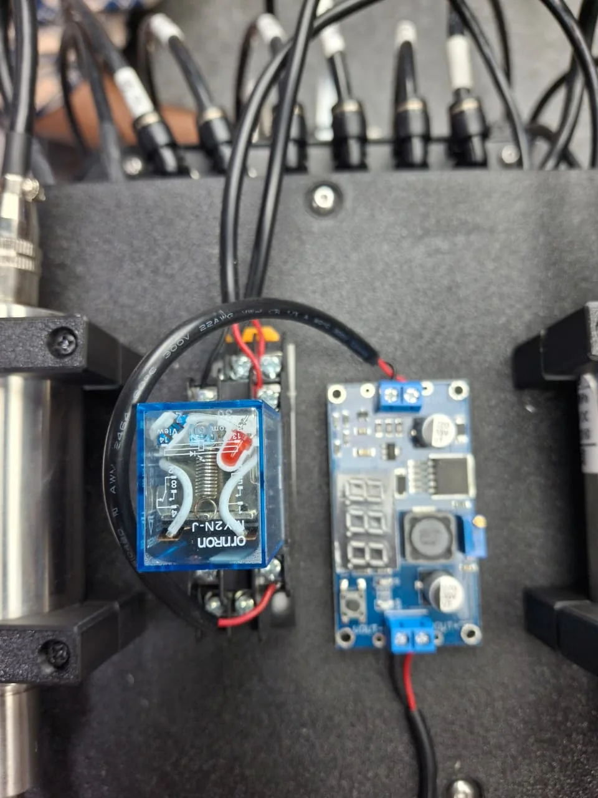

Material path
The body geometry guides material toward the outlet while the driven internal element supports consistent discharge.
Mechanical design / Internship
A compact motor-driven hopper developed to store and feed material reliably, with a transparent level window and parts designed for practical fabrication.

Develop a small hopper that could feed material predictably within the available machine space and make the remaining level easy to inspect.
The design brought together the hopper body, lid, shaft, coupling, motor mount, side acrylic and fastening details as a complete assembly.
The body geometry guides material toward the outlet while the driven internal element supports consistent discharge.
A 12 V DC motor, shaft and custom coupling form the compact actuation arrangement.
A clear side window allows operators to see material level without opening the unit.
3D-printed parts and readily available hardware enabled fast iteration and assembly.
I developed and refined the SolidWorks model, prepared the component assembly and supported the physical build and electrical integration.
Build evidence


